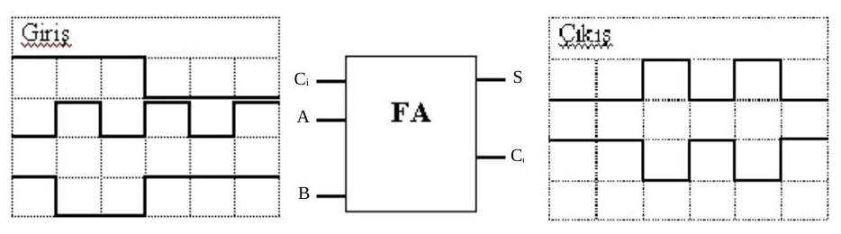
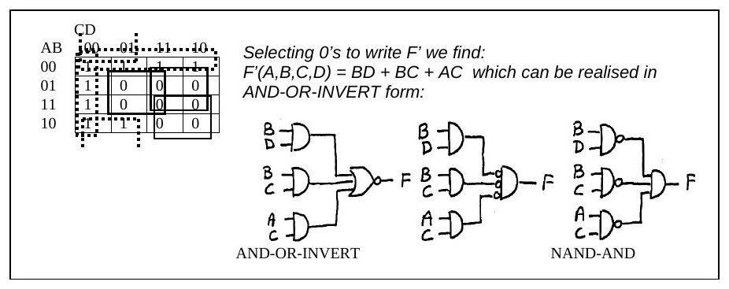
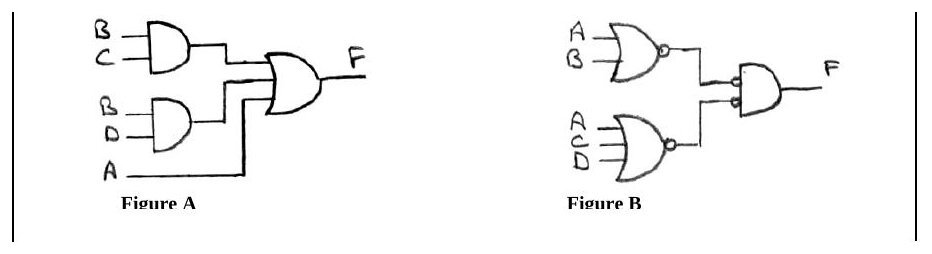
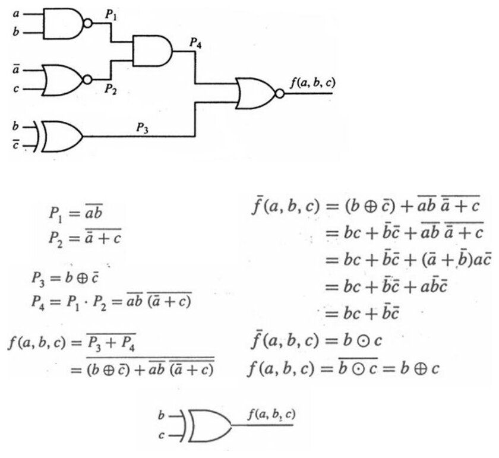

· EEM211
EEM211 Digital Logic Design: Midterm Answers (20 November 2006)
EEM211 – Sayısal Mantık Tasarımı · 20.11.2006 · 16.10.2026
This post contains the questions of the 20 November 2006 midterm exam of Başkent University's EEM211 Digital Logic Design course, together with the answer key ("EEM211 Midterm Answers") prepared by the instructors. The exam is in English; the questions and solutions are given below as text, and the circuit drawings and waveforms are included as images. The original Word file can be downloaded at the end of the post.
1. Answer the following questions
a) 9E36.7AH = ?₂ = ?₈
Since the given number is Hexadecimal, we may convert it into binary by writing each digit in 4-bits binary.
(9E36.7A)₁₆ = (1001111000110110 . 01111010)₂
Now, by rearranging the number in 3-bits groups, we may find its corresponding octal number:
(001 001 111 000 110 110 . 011 110 100)₂ = (117066.364)₈
b) Self-complementing code
Decimal 3 is expressed as 0110 in a self-complementing code alphabet. Find the corresponding code for decimal 6, in the same alphabet.
The property of self-complementing codes is that, the 9's complement of a given number can be found by complementing each bit. Since the 9's complement of 3 is 6, it should be obtained by complementing each bit of 3, which is 1001.
Answer: 1001
c) Smallest 6-bit number
What is the smallest number that can be represented in 6-bit signed 2's complement form? Is it the same in 6-bit signed 1's complement representation? Why?
−32 (100000), is the smallest number that can be represented in 6 bit signed-2's complement form. In 1's complement form, it becomes −31 (100000), since one of the combinations (111111) is used for −0, which is not available in 2's complement.
d) Hamming code
Find the corresponding Hamming Code for the 4-bit message 1101. Show all of your steps clearly.
| Position | 1 | 2 | 3 | 4 | 5 | 6 | 7 |
|---|---|---|---|---|---|---|---|
| Word | p1 | p2 | 1 | p3 | 1 | 0 | 1 |
The message bits are shown in bold.
- 4, 5, 6, 7 parity check: even → p3 = 0
- 2, 3, 6, 7 parity check: even → p2 = 0
- 1, 3, 5, 7 parity check: odd → p1 = 1
Coded word: 1010101
e) Canonical forms
Given F(x,y,z) = x'y' + x'z. Find F'(x,y,z) in canonical S.O.P and P.O.S forms and express them in ∏ and Σ standard formats.
| # | x y z | F = x'(y' + z) | F' |
|---|---|---|---|
| 0 | 000 | 1 | 0 |
| 1 | 001 | 1 | 0 |
| 2 | 010 | 0 | 1 |
| 3 | 011 | 1 | 0 |
| 4 | 100 | 0 | 1 |
| 5 | 101 | 0 | 1 |
| 6 | 110 | 0 | 1 |
| 7 | 111 | 0 | 1 |
- F'(x, y, z) = Σ(2, 4, 5, 6, 7)
- F'(x, y, z) = ∏(0, 1, 3)
2. Answer the following questions
a) 8-bit 2's complement arithmetic
Given A = (00011001)₂ and B = (11010010)₂. Show how A+B, A−B, −A−B and B−A would be computed, using 8-bit two's complement arithmetic, step by step separately.
A = (25)₁₀ = (00011001)₂, B = (11010010)₂, −A = 11100111, −B = 00101110
| Operation | Result (binary) | Decimal |
|---|---|---|
| A + B | 11101011 | −21 |
| A − B | 01000111 | 71 |
| B − A | 10111001 | −71 |
| −A − B = (−A) + (−B) | 00010101 | 21 |
b) Output waveforms of the full adder
Draw the output waveforms S and C (into the given spaces) of the Full Adder, that would be generated in response to the given input signals.

The values of the waveforms over the six time intervals:
| Interval | 1 | 2 | 3 | 4 | 5 | 6 |
|---|---|---|---|---|---|---|
| Ci | 1 | 1 | 1 | 0 | 0 | 0 |
| A | 0 | 1 | 0 | 1 | 0 | 1 |
| B | 1 | 0 | 0 | 1 | 1 | 1 |
| S | 0 | 0 | 1 | 0 | 1 | 0 |
| Co | 1 | 1 | 0 | 1 | 0 | 1 |
3) Two-level NAND-AND implementation
F(A,B,C,D) = Σ(0,1,2,3,4,8,9,12). Implement this function using two level NAND – AND form with minimum logic gates.
| AB \ CD | 00 | 01 | 11 | 10 |
|---|---|---|---|---|
| 00 | 1 | 1 | 1 | 1 |
| 01 | 1 | 0 | 0 | 0 |
| 11 | 1 | 0 | 0 | 0 |
| 10 | 1 | 1 | 0 | 0 |
Selecting 0's to write F' we find: F'(A,B,C,D) = BD + BC + AC which can be realised in AND-OR-INVERT form.
The expression F = (BD + BC + AC)' is first drawn as AND-OR-INVERT (AND gates + NOR); then the NOR gate is replaced by its equivalent, an AND gate with inverted inputs, and the inversions are moved to the outputs of the AND gates, bringing the circuit to NAND-AND form.

4) BCD ≥ 5 detector
Design a 4-input, 1-output logic circuit, that will receive BCD numbers at its input and generate an output of 1, if the received number is ≥ 5, an output of 0 otherwise. Realize your circuit in AND – OR form, with minimum number of gates/inputs, without any inverter. Repeat your design in NOR – NOR form. NOTE: The inverted inputs are not available.
| # | A | B | C | D | F |
|---|---|---|---|---|---|
| 0 | 0 | 0 | 0 | 0 | 0 |
| 1 | 0 | 0 | 0 | 1 | 0 |
| 2 | 0 | 0 | 1 | 0 | 0 |
| 3 | 0 | 0 | 1 | 1 | 0 |
| 4 | 0 | 1 | 0 | 0 | 0 |
| 5 | 0 | 1 | 0 | 1 | 1 |
| 6 | 0 | 1 | 1 | 0 | 1 |
| 7 | 0 | 1 | 1 | 1 | 1 |
| 8 | 1 | 0 | 0 | 0 | 1 |
| 9 | 1 | 0 | 0 | 1 | 1 |
| 10–15 | X |
Karnaugh map (rows CD, columns AB):
| CD \ AB | 00 | 01 | 11 | 10 |
|---|---|---|---|---|
| 00 | 0 | 0 | X | 1 |
| 01 | 0 | 1 | X | 1 |
| 11 | 0 | 1 | X | X |
| 10 | 0 | 1 | X | X |
If we select the 1's in the map, we can write: F(A,B,C,D) = A + BC + BD which can be directly realized as shown in Fig. A.
Now, if we select 0's, we can write: F(A,B,C,D) = (A+B)(A+C+D) which can be realized in OR-AND form and then by adding cancelling bubbles it can easily be converted into NOR-NOR form, as shown in Fig. B.

5) Circuit simplification
Find a simplified (minimized) expression and draw your new circuit, for the logic circuit below.
The circuit has a NAND gate (P1) with inputs a, b, a NOR gate (P2) with inputs a' and c, and an XOR gate (P3) with inputs b and c'; P1 and P2 are combined in an AND gate to give P4, and P3 and P4 are then passed through a NOR gate to produce the output f(a, b, c).
- P1 = (ab)'
- P2 = (a' + c)'
- P3 = b ⊕ c'
- P4 = P1 · P2 = (ab)' · (a' + c)'
- f(a, b, c) = (P3 + P4)' = [(b ⊕ c') + (ab)'(a' + c)']'
The complement is simplified:
- f'(a, b, c) = (b ⊕ c') + (ab)'(a' + c)'
- = bc + b'c' + (ab)'(a' + c)'
- = bc + b'c' + (a' + b')ac'
- = bc + b'c' + ab'c'
- = bc + b'c'
- f'(a, b, c) = b ⊙ c
- f(a, b, c) = (b ⊙ c)' = b ⊕ c
That is, the whole circuit reduces to a single XOR gate.
